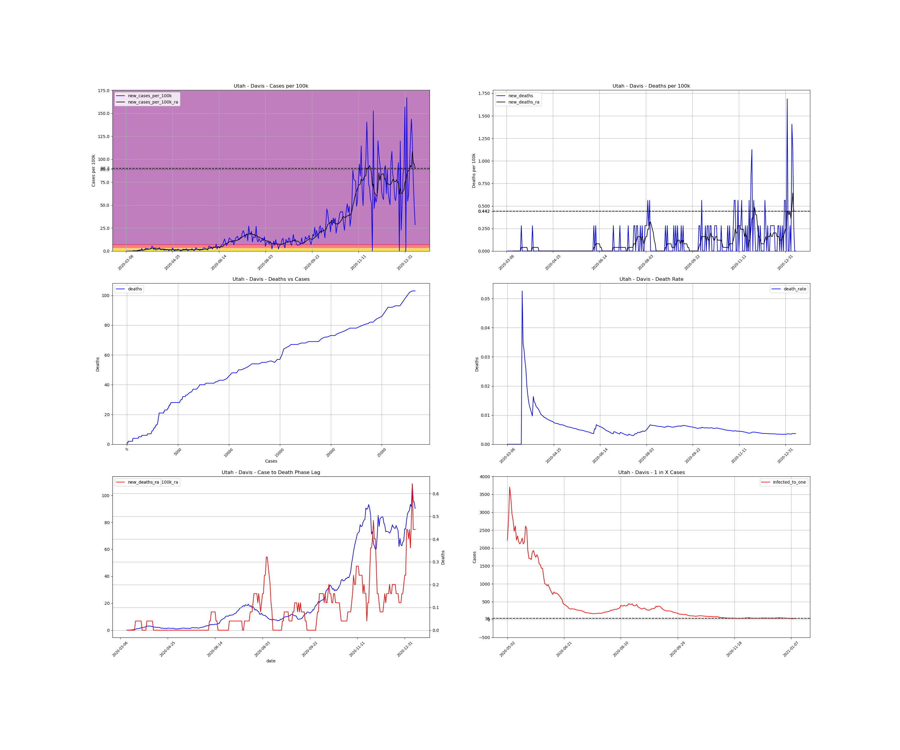
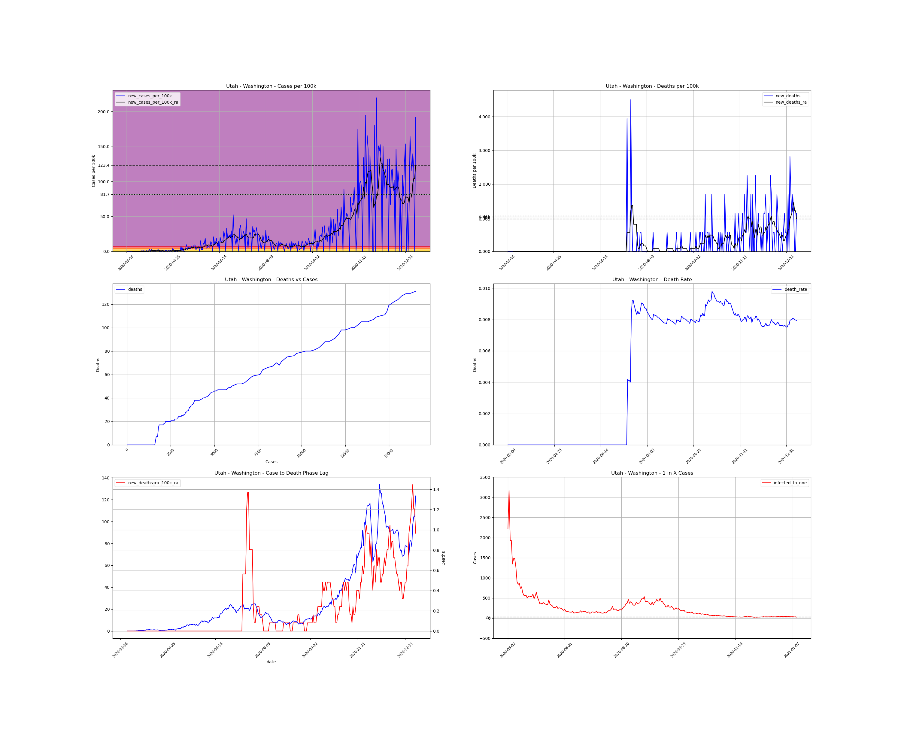
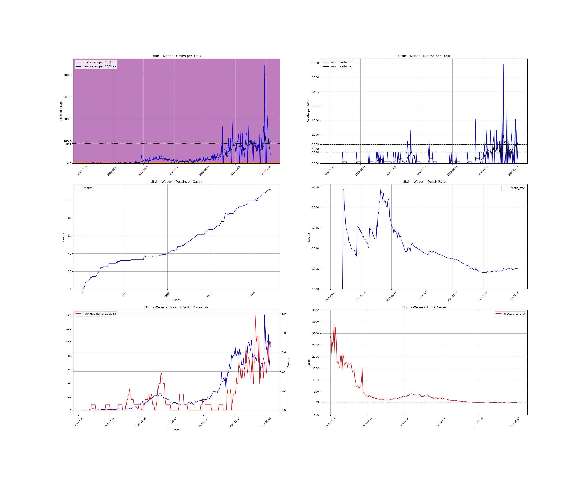

<h1>Utah Counties</h1><table><tr><td><a #Beaver>Beaver</a></td></tr><tr><td><a #Box Elder>Box Elder</a></td></tr><tr><td><a #Cache>Cache</a></td></tr><tr><td><a #Carbon>Carbon</a></td></tr><tr><td><a #Daggett>Daggett</a></td></tr><tr><td><a #Davis>Davis</a></td></tr><tr><td><a #Duchesne>Duchesne</a></td></tr><tr><td><a #Emery>Emery</a></td></tr><tr><td><a #Garfield>Garfield</a></td></tr><tr><td><a #Grand>Grand</a></td></tr><tr><td><a #Iron>Iron</a></td></tr><tr><td><a #Juab>Juab</a></td></tr><tr><td><a #Kane>Kane</a></td></tr><tr><td><a #Millard>Millard</a></td></tr><tr><td><a #Morgan>Morgan</a></td></tr><tr><td><a #Piute>Piute</a></td></tr><tr><td><a #Rich>Rich</a></td></tr><tr><td><a #Salt Lake>Salt Lake</a></td></tr><tr><td><a #San Juan>San Juan</a></td></tr><tr><td><a #Sanpete>Sanpete</a></td></tr><tr><td><a #Sevier>Sevier</a></td></tr><tr><td><a #Summit>Summit</a></td></tr><tr><td><a #Tooele>Tooele</a></td></tr><tr><td><a #Uintah>Uintah</a></td></tr><tr><td><a #Utah>Utah</a></td></tr><tr><td><a #Wasatch>Wasatch</a></td></tr><tr><td><a #Washington>Washington</a></td></tr><tr><td><a #Wayne>Wayne</a></td></tr><tr><td><a #Weber>Weber</a></td></tr></table>